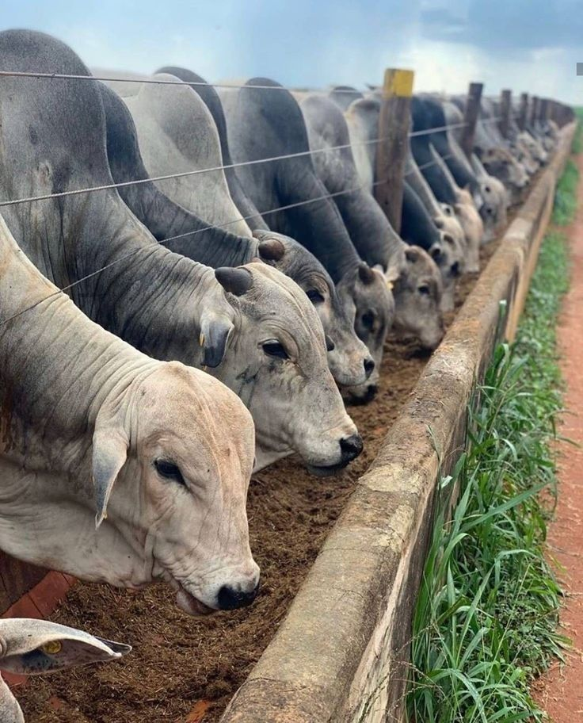

Com um olhar atento ao campo, nos dedicamos a entregar análises precisas, cotações em tempo real e matérias exclusivas. Acreditamos que a informação de qualidade é a principal ferramenta para que o produtor rural possa tomar decisões estratégicas e impulsionar seus resultados.
Nossa empresa atua na área de informação sobre pecuária, levando notícias, novidades e informações importantes para produtores, profissionais do agronegócio e pessoas interessadas no setor. Nosso objetivo é manter o público sempre atualizado sobre o que acontece no mercado pecuário, novas tecnologias, produção e tendências do campo.
Iniciamos nossas atividades há 22 anos, por meio de jornais impressos, onde construímos nossa credibilidade e conquistamos leitores ao longo do tempo. Durante esse período, sempre buscamos levar informações confiáveis e relevantes para o setor agropecuário.
Com o avanço da tecnologia e da comunicação digital, decidimos expandir nosso trabalho para a internet. Agora, por meio do nosso site, buscamos alcançar um público ainda maior, levando notícias de forma rápida, acessível e confiável.

Além das notícias sobre pecuária, nosso site também contará com uma página de vagas de emprego, com o objetivo de ajudar profissionais do setor agropecuário a encontrar novas oportunidades de trabalho e conectar empresas a novos talentos.
Nosso compromisso continua sendo informar com responsabilidade e contribuir para o crescimento e desenvolvimento da pecuária.
O Que Nossa Empresa Busca

Nossa empresa busca transformar a pecuária através da inovação, tecnologia e sustentabilidade. Trabalhamos para desenvolver soluções modernas que aumentem a produtividade, melhorem a qualidade da produção e reduzam impactos ambientais. Nosso objetivo é conectar o campo às novas tecnologias, promovendo uma pecuária mais eficiente, inteligente e preparada para o futuro. Também buscamos fortalecer o agronegócio brasileiro com responsabilidade, evolução constante e compromisso com a excelência.